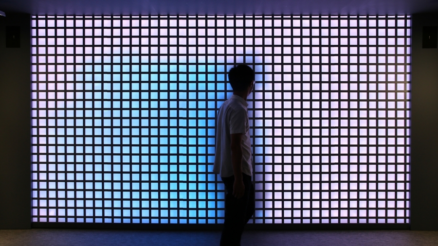
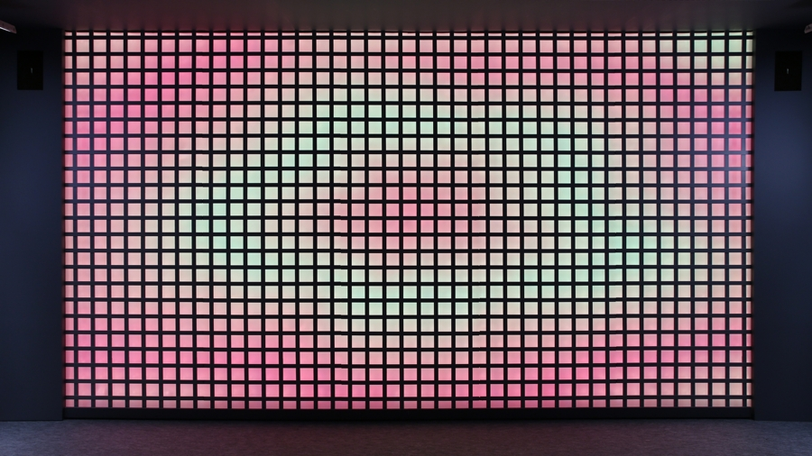
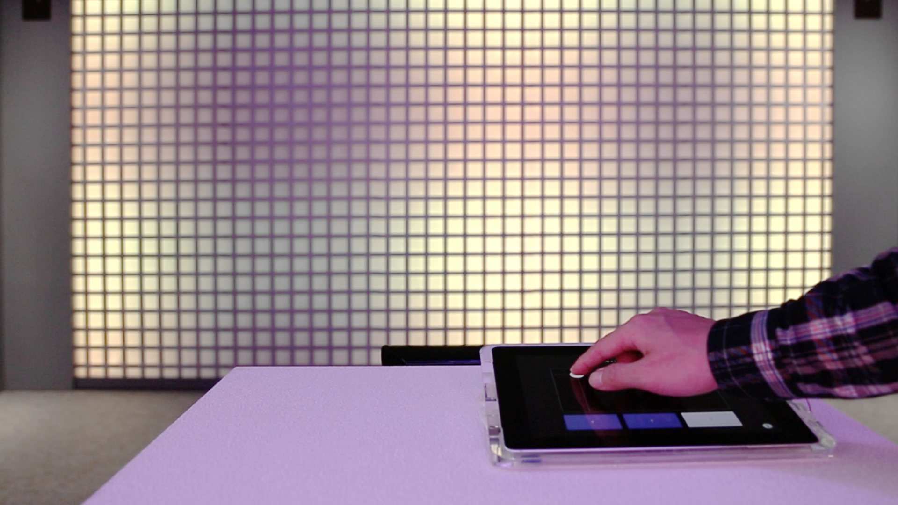
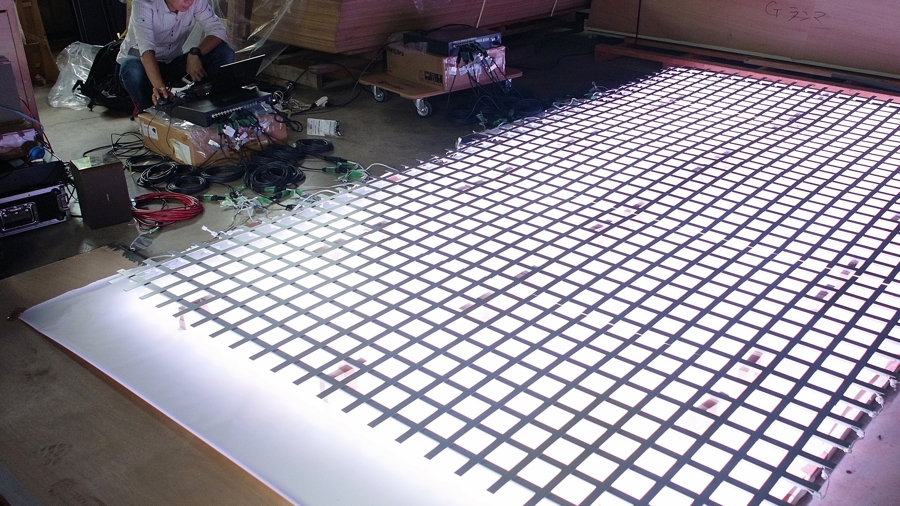

Interactive LED Facade
This is a research and development project for creating an interactive LED facade with Color Kinetics Japan and RANAGRAM. We set approximately 1,000 LED lamps on the back of an iron lattice installed on the 4 x 2.5 m wall. Indirect lighting can make subtle visual patterns by employing the reflection of light to the wall. Geometric patterns that change shapes as time goes by and animations that is based on a sound spectrum are generated by using Perlin noise.
   

Team Member
Yasuo Kaneda
Producer
Nozomi Shirai
Project Management
Masahide Yoshida
Technical Direction
Software Development
Producer
Nozomi Shirai
Project Management
Masahide Yoshida
Technical Direction
Software Development
Keiichi Sugimoto
Sound Design
Color Kinetics Japan
LED Lighting
Takashi Aoki
Concept
Art Direction
Interaction Design
Sound Design
Color Kinetics Japan
LED Lighting
Takashi Aoki
Concept
Art Direction
Interaction Design